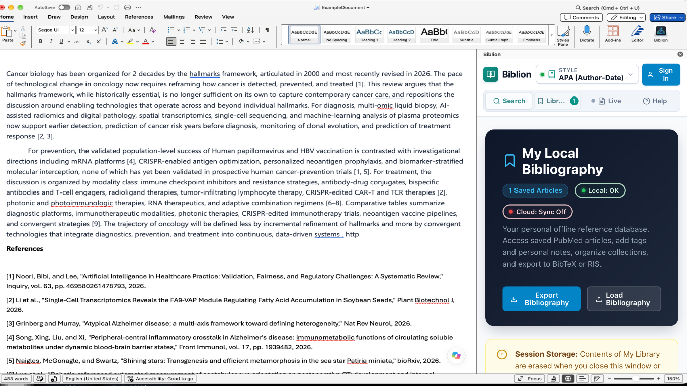
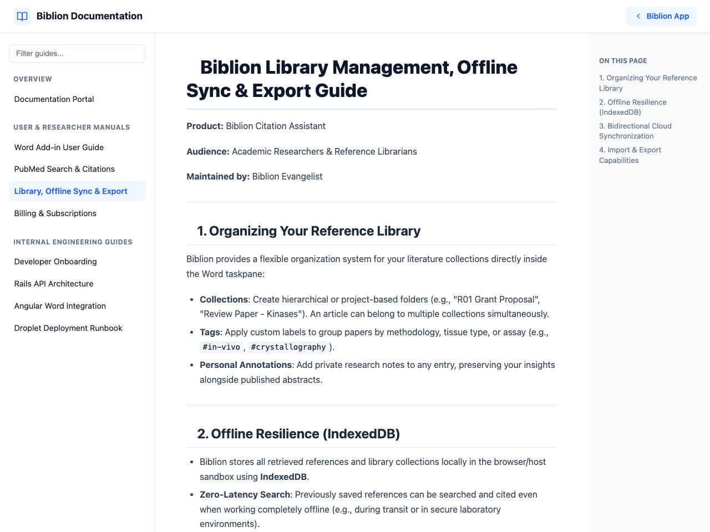

#My Library: Collections, Notes, Export & Cloud Sync
Product: Biblion Citation Assistant
Audience: Academic Researchers & Reference Librarians
Maintained by: Documentation Writer
#1. What It Does and Why It Helps
My Library is your personal reference collection. Save the papers you find, organise them for each project, keep your own notes, and export them for other tools. It works offline, and when you are signed in it syncs to the cloud so every device has the same library.

#2. Save and Remove Articles
- On any article card, click Save to Library. The button becomes Saved in Library and the counter next to My Library increases.
- Open My Library. The header reads My Local Bibliography with a count such as 1 Saved Articles.
- To remove an article, click Saved in Library again on its card. It is also removed from any collection.
A new library shows Your Library is Empty until you save something.
#3. Collections
Use collections to group papers by project (for example "R01 Grant Proposal" or "Review Paper - Kinases").
- In My Library, click + New Collection.
- Enter a name (and, optionally, a colour), then click Save Collection.
- The collection appears as a chip showing its article count, e.g. Genomics Review 2026 (0).
- On an article, tick the collection's checkbox to add it. The count updates to (1).
- Click a collection chip to show only its articles; click again to clear the filter.
Good to know: one article can belong to several collections. Deleting a collection removes only the folder; your articles remain in the library.
#4. Tags, Notes and Favorites
- Tags: click Edit tags, enter labels separated by commas (e.g.
CRISPR, Precision), then Save Tags. They appear as#CRISPR,#Precision. - Notes: click the notes box, type your private note (e.g. Focus on figure 3 for Western blot analysis), then Save Notes.
- Favorites: click ☆ Favorite to star a paper (it turns to ★ Favorite). Use the favorites chip to show only starred papers.
#Find things fast
Search your library by title, author, journal, PMID or your notes. Filter by collection, tag or favorites, and sort by date saved, title, author or year.
#5. Export and Import
- Click Export Bibliography. The Export Local Bibliography window opens.
- Choose a format tab:
- BibTeX (
.bib): for LaTeX and Overleaf. Keys look likeSmith2020_31452510. - RIS (
.ris): for Zotero, Mendeley and EndNote. - JSON: a full backup with articles and collections.
- Download the file (e.g.
biblion-library.bib).
To restore a backup, choose Import Backup and select a Biblion .json file. A message confirms how many articles and collections were restored.
Importing .ris or .bib files is not available yet; use the JSON backup to move a library.
#6. Offline Use
Your library is stored on your device, so you can read, search and edit it with no internet. If you save an article while offline, it is kept locally and Biblion shows Failed to synchronize with cloud. until the connection returns; nothing is lost.
#7. Cloud Sync
When you are signed in with an active trial or subscription, Biblion syncs automatically:
- when you sign in,
- right after you save, delete or edit something, and
- when you return to Biblion after more than 20 seconds away, so edits from another device appear without any action.
A small spinner in the header shows that a sync is running. If you edit an article while a sync is in progress, your newest edit wins and is sent in the next sync.

Shared computers: use Sign Out when finished. It clears the local copy; your cloud library is safe. Without signing in, the local library is cleared at the end of the session.
Related: Account & Sign-In, Subscription & Billing